A portable seat designed around how people already use a city's steps and edges.
StepSeat is a piece of playful public seating designed in response to how people naturally use steps and edges as informal places to sit. It responds to a specific spot in Cork: a café beside the river, where people already sit out on the steps rather than use seating provided, often getting wet or dirty in the process.
Rather than fight that behaviour, StepSeat works with it. It's a lightweight, portable seat that can be brought outside and set down directly on the steps, giving people a drier, more comfortable way to occupy a spot they'd already chosen for themselves. By giving people the freedom to choose where they sit, the project introduces an element of play into everyday public space, encouraging exploration and a slightly different relationship with surroundings most people just pass through.
It's designed to be robust enough for repeated outdoor use while staying light enough to carry and store as part of the café's everyday routine, designed and fabricated entirely by hand in my home workshop. The form went through several small-scale studies, cut and painted in balsa, before settling on a rounded shape with handles at each end. It's currently in daily use at the café, picked up by whoever wants a drier seat than the steps offer.
The bigger idea behind it is that small, adaptable objects like this one can support informal use and extend the social life of a public place, without needing any major redesign of the space itself.
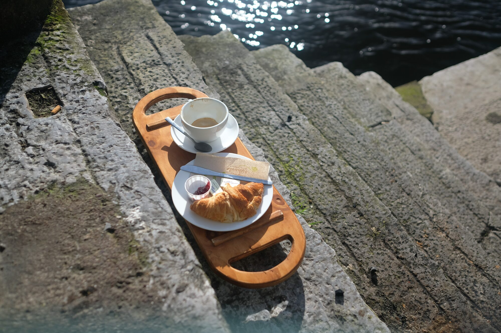
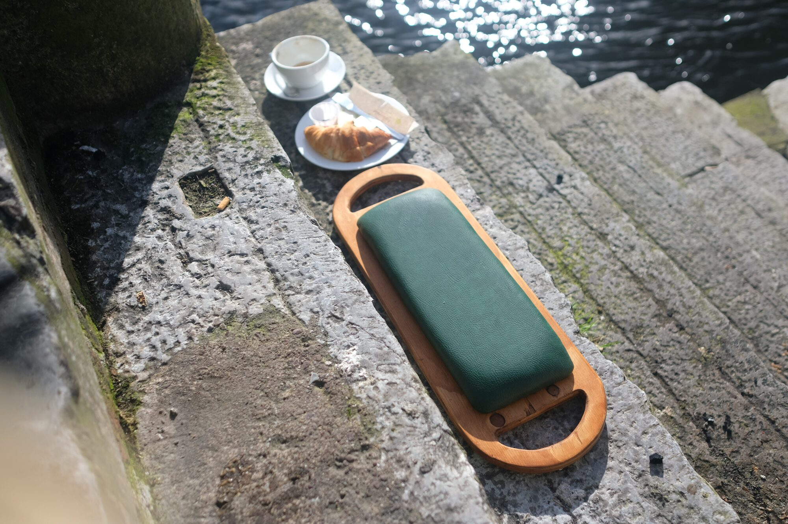
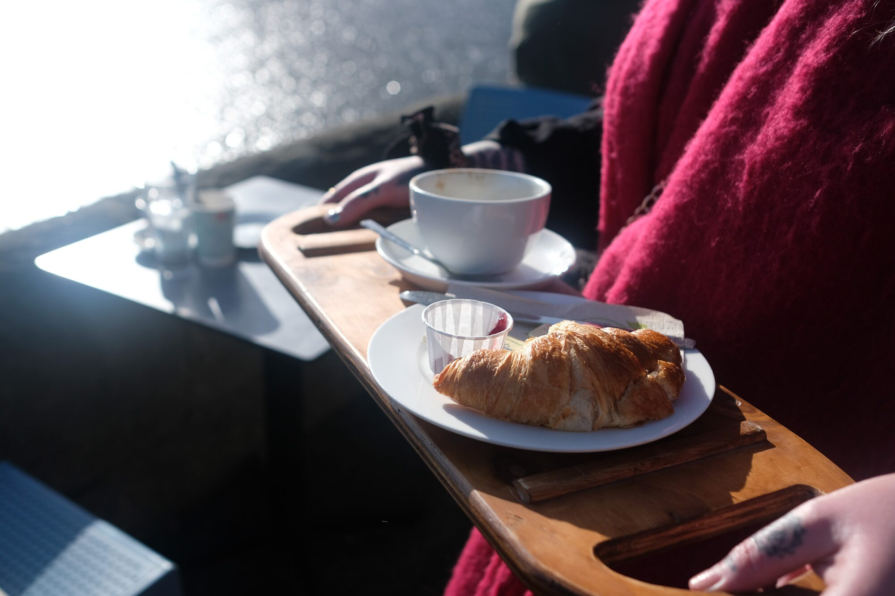
StepSeat grew out of a Culture Moves Europe mobility grant, awarded for a research project on the role of play in urban areas. Copenhagen builds its public realm around people rather than businesses, so I went to see how that played out in everyday objects: chairs in museums, seating built into skate parks, climbing nets strung between lamp posts, picnic tables you're meant to climb on as much as sit at.
There was too much to document in two weeks, so I narrowed the focus to playful public seating specifically, recording it through photos, video, and mostly by sitting on as much of it as I could.
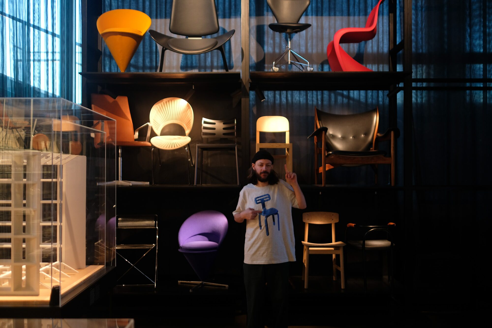
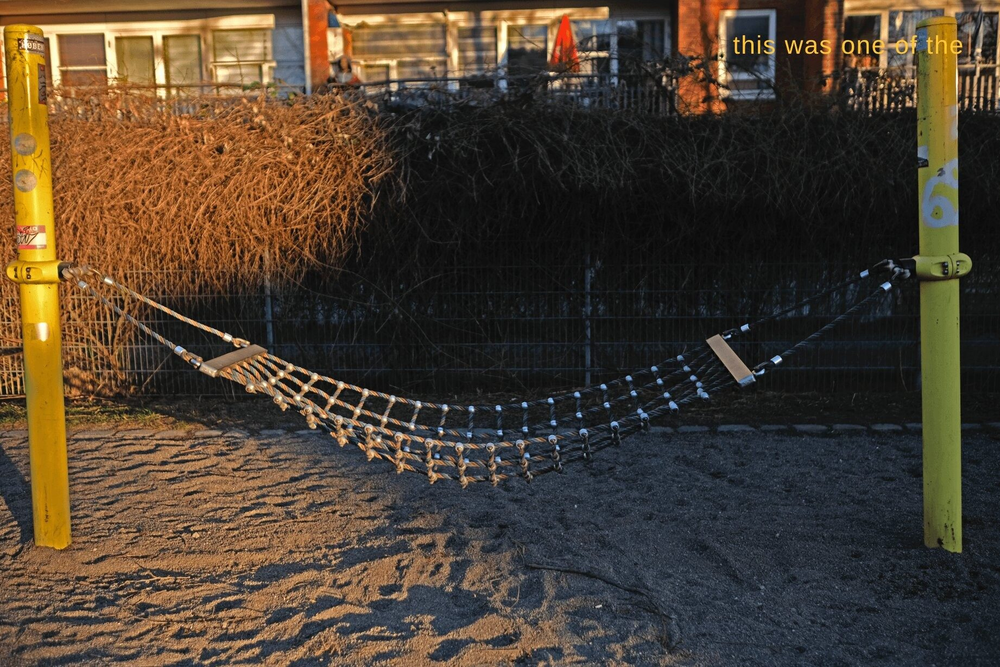
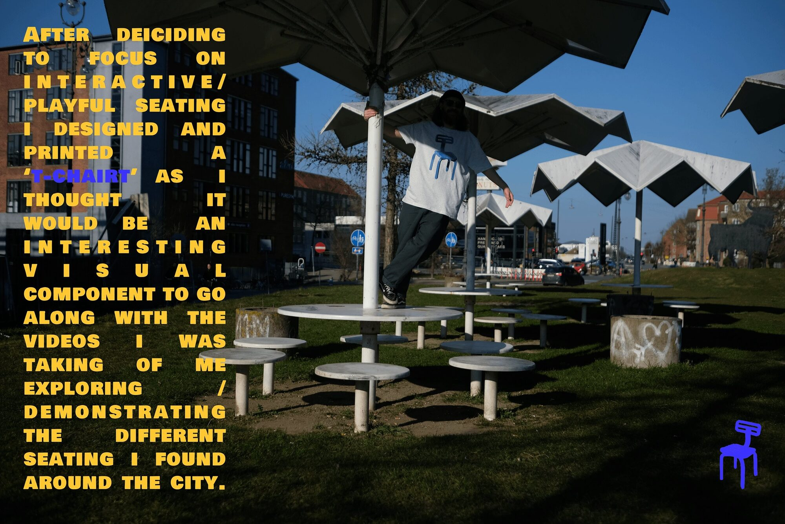
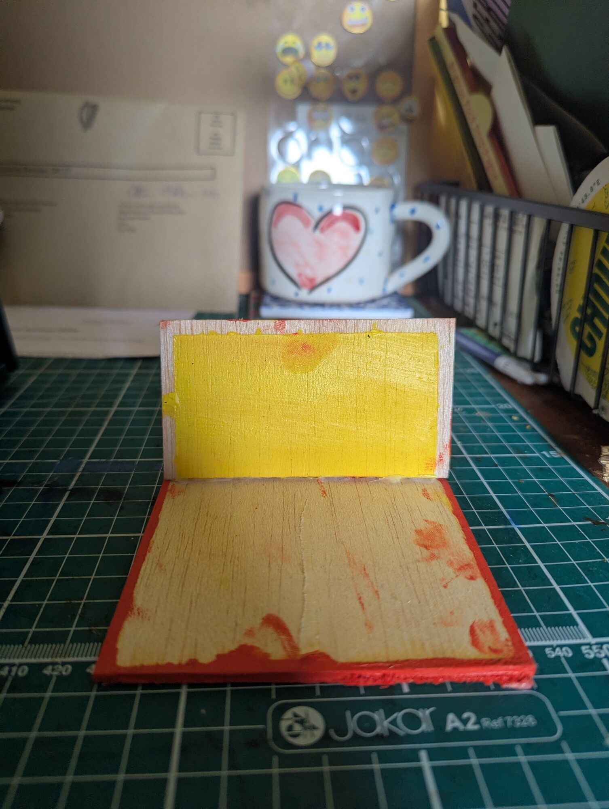
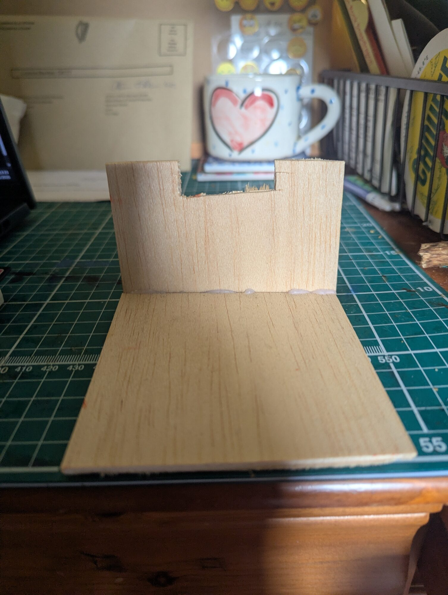
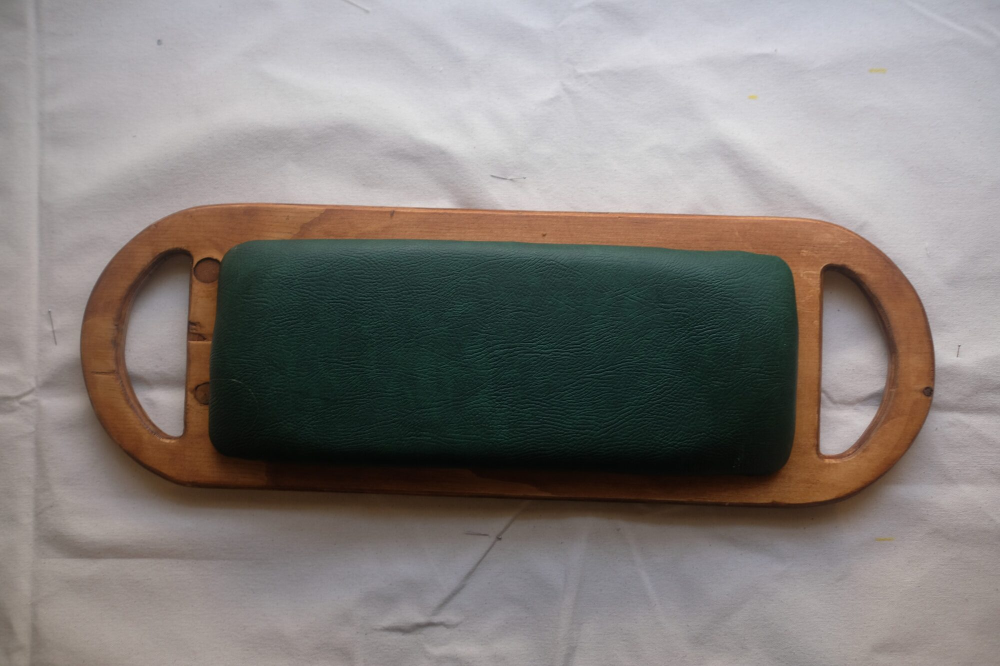
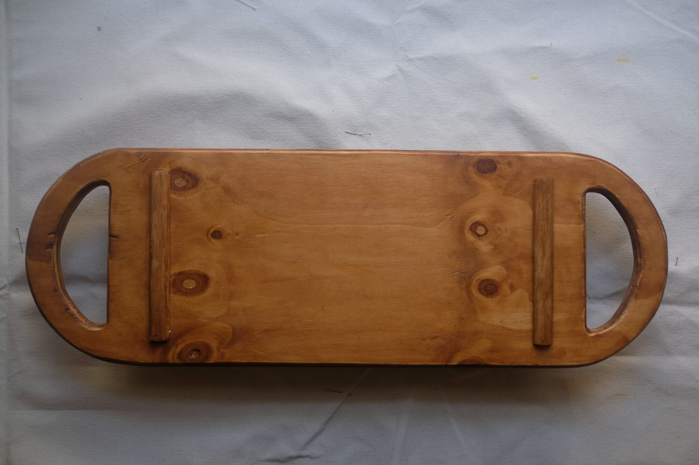
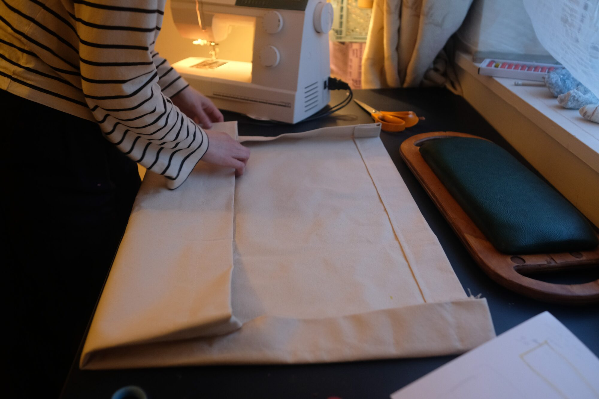
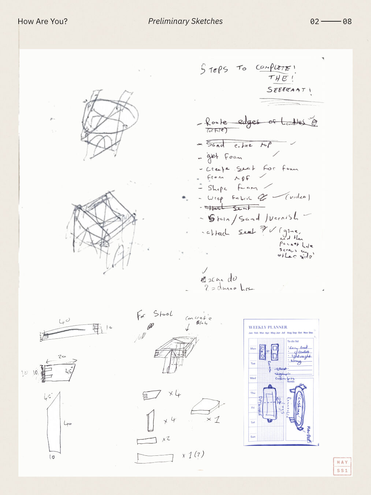
Problem: people were already choosing to sit on the steps despite them being uncomfortable. Approach: rather than discouraging that, the design embraces and supports it. Result: a simple intervention that improves an existing experience instead of replacing it.
Problem: early prototypes included a backrest, making the design feel like a generic portable chair rather than a response to the riverside steps. Approach: removed the backrest and reduced the design to only what was needed for that particular setting. Result: a seat that feels rooted in the place it was designed for, rather than something that could belong anywhere.
Problem: the seat would spend much of its life outdoors in wet conditions. Approach: built from marine-grade plywood with a heavy-duty leather seat, then sealed for outdoor use. Result: a durable seat designed to cope with regular exposure to rain and everyday wear.
Problem: dragging the seat across the stone steps would quickly wear away the underside. Approach: added two bevelled runners beneath the seat to lift the base clear of the surface. Result: the seat glides more easily across the steps while significantly reducing abrasion.
Problem: people using the riverside steps often carried a coffee and something to eat. Approach: integrated handles that allow the seat to double as a serving tray while being carried. Result: one object performs two tasks, making the walk from café to riverside simpler and more enjoyable.
Problem: if people don't immediately understand or feel comfortable using an object, they often ignore it. Approach: designed an approachable silhouette with integrated handles that naturally invite people to pick it up and carry it. Result: the object communicates how it should be used without requiring instructions.
Problem: MYO Café has limited storage space. Approach: reduced the overall footprint of the seat and designed a custom canvas storage bag. Result: the seats can be stored neatly inside the café when not in use.